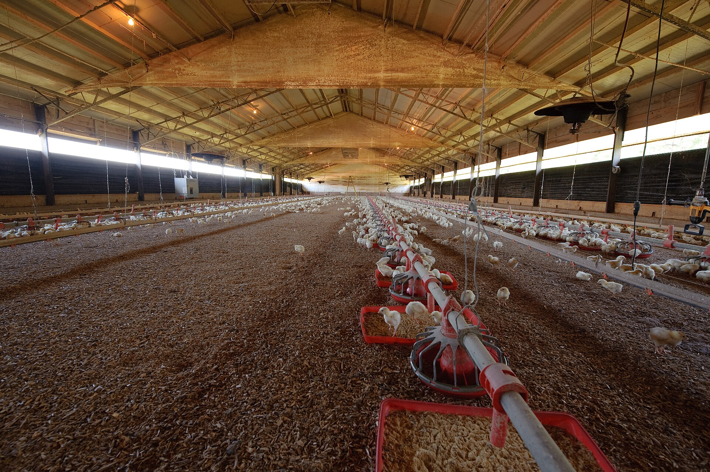
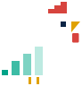
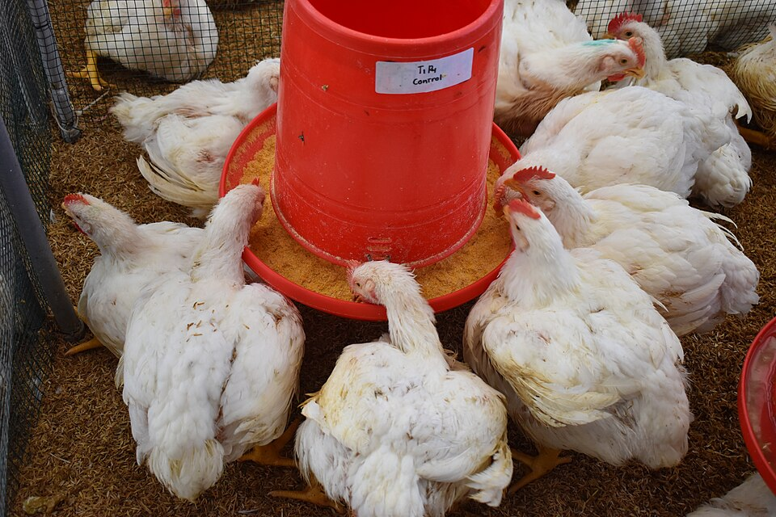
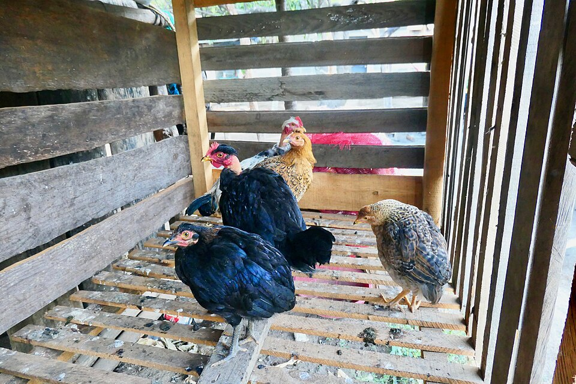
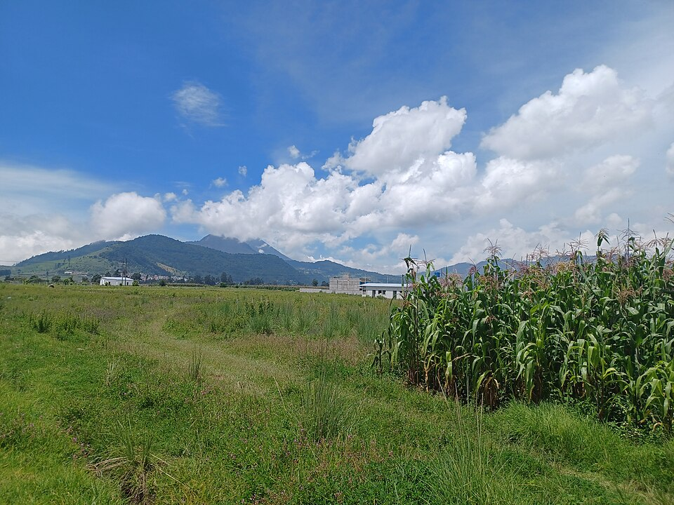
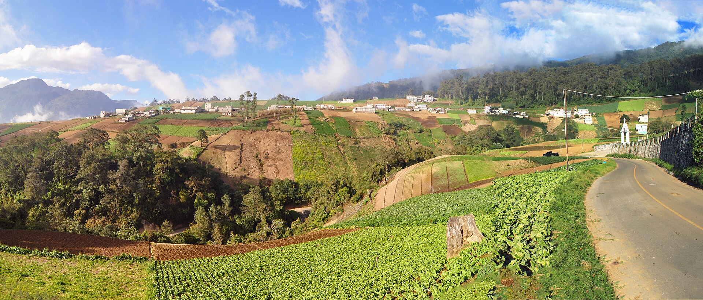
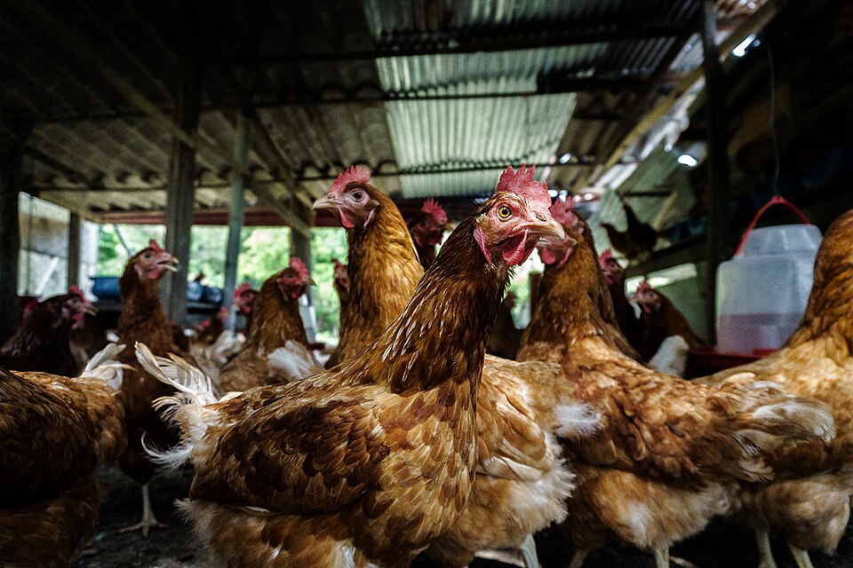
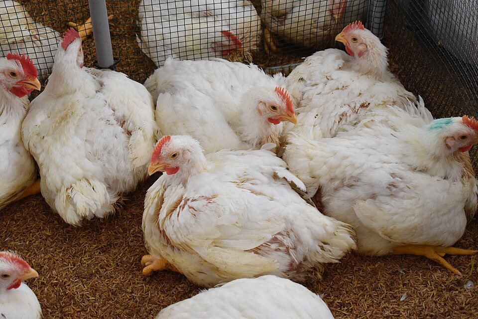
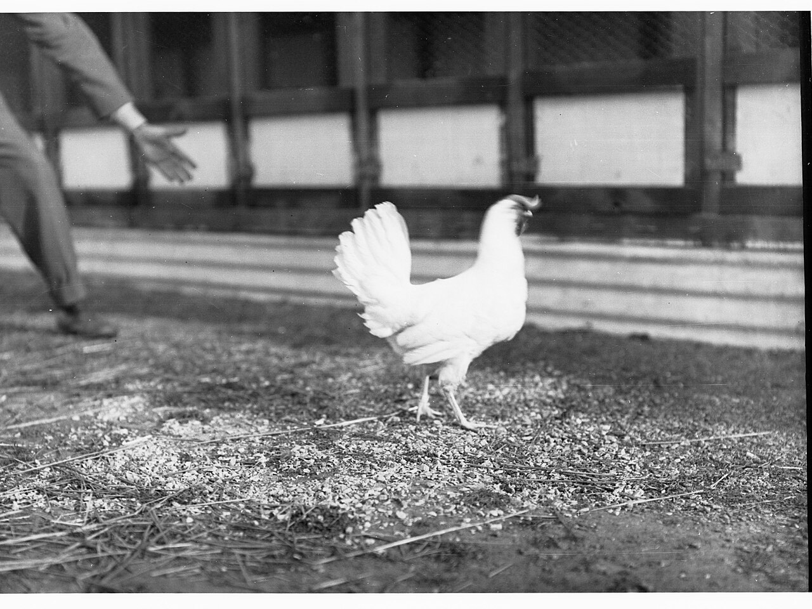
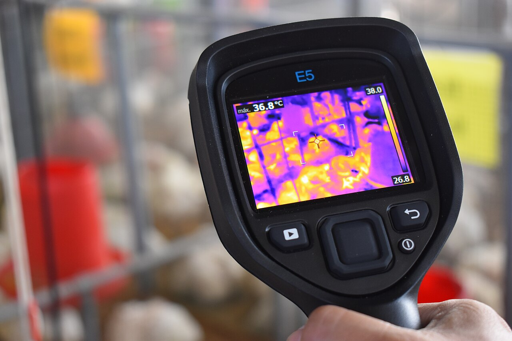

Huevo mediano
Caja de 360 · +11.44% frente a 2025
- Q408.57 2022
- Q445.48 2023
- Q385.15 2024
- Q341.00 2025
- Q380.00 2026


Chiik NewsEdición 2026-W48 · 23 de noviembre de 2026
01 / PreciosPrecio de referencia mayorista · La Terminal, Ciudad de Guatemala · Fuente: MAGA
Comparado con el dato del 13 de noviembre, publicado en la edición anterior.




Semana quieta en La Terminal. El 20 de noviembre, huevo, pollo y maíz amarillo seguían igual que el 13. El maíz se mantiene en Q215 por quintal, después de subir Q15 la semana pasada. La soya no aparece en la tabla diaria y MAGA todavía no publica el informe semanal del 16 al 20 de noviembre, así que esta semana queda sin dato. La gallina sigue con el dato mensual de octubre, el último publicado.
En su último informe semanal publicado, del 9 al 13 de noviembre, MAGA reportó abastecimiento normal de huevo y de pollo, y esperaba precios estables para ambos. El huevo llegó sobre todo de granjas de Fraijanes, Santa Catarina Pinula y San José Pinula; el pollo, de plantas de Escuintla y Guatemala. Al 23 de noviembre no había salido el informe siguiente.
Caja de 360 · +11.44% frente a 2025
Libra · Sin cambio frente a 2025
Quintal · +11.58% frente a 2025
Promedio de noviembre en La Terminal, según el informe semanal de MAGA del 9 al 13 de noviembre de 2026, el último publicado al 23 de noviembre. El dato de 2026 cubre solo lo que iba del mes.
† Cálculo de Chiik News con datos de MAGA. Fuentes: Precios diarios · Informe semanal del 9 al 13 de noviembre · Informe mensual de octubre

La ciencia, aterrizada al galpón.
Campos de cultivo en el altiplano de Quetzaltenango, Guatemala.

En 2023, investigadores de la Universidad de São Paulo y del Instituto Federal de Rio Grande do Sul encuestaron a 90 productores brasileños de huevo con gallinas sin jaula, sueltas en el galpón. De ellos, 83 dijeron haber visto alguna vez a sus gallinas amontonarse: apretarse o subirse unas sobre otras en un grupo muy denso. Si el amontonamiento pasa a más, algunas mueren asfixiadas. A 57 de esos 83 (68.7%) les pasó más de una vez, según contaron.
¿Dónde pasó? Sobre todo en las esquinas (66.3%) y las paredes bajas (43.4%); después, en las divisiones (21.7%) y los nidos (16.9%). El 63.9% lo vio de noche (se podía marcar más de un horario). Como causas, los productores creyeron ver un depredador cerca del galpón (45.8%); tormentas, viento o truenos (33.7%); el sol que pega en un solo punto (25.3%), y el ruido de las lonas (24.1%). En los comentarios libres de 56 productores, lo más mencionado fue la recría y el traslado de las pollas a la nave de postura (26.8%), y la luz (25%).
Ojo: es una encuesta. Cuenta lo que los productores recuerdan, no lo que se midió, y no se hizo en Guatemala. En este estudio, el tamaño de la parvada, el tipo de nido y la forma de apagar la luz (de golpe o poco a poco) no mostraron relación con que el problema volviera a pasar. Eso no prueba que no influyan: con tan pocos casos, el estudio no alcanza para descartarlo. Los autores proponen vigilar más el traslado y la adaptación de las pollas, los contrastes de luz y los lugares donde las aves se juntan. Nuestra lectura: si tienes gallinas en piso, date una vuelta por la nave al apagar la luz y en los días después del traslado, y revisa las esquinas.
Encuesta transversal a 90 productores (83 con amontonamiento) · Gallinas de postura sin jaula · Brasil. No probado en Guatemala.
Foto ilustrativa: gallinas bajo techo de lámina en Magdalena, Colombia. No forma parte del estudio.
Cada mañana, por nave: cuántas aves muertas hay, si las encontraste juntas y en qué lugar (esquina, pared, nido). Anota también la fecha de traslado de cada lote de pollas y cualquier susto durante la noche: tormenta, un animal cerca o que se fue la luz.
Cuestionario en línea (Google Forms) de julio a noviembre de 2023, distribuido a productores de huevo sin jaula de la red MIRA Laying Hen Initiative en 10 estados de Brasil. Se definió el amontonamiento (piling) como agregación inusualmente densa en la que las aves se presionan o se suben unas sobre otras, y se distinguió de la sofocación (smothering), que implica muerte por asfixia; no se recogieron datos de mortalidad. Edad de las aves cuando ocurrió (respuesta múltiple): 13 a 20 semanas (38.6%), 21 a 30 (37.3%) y 5 a 12 (31.3%).
Análisis de correspondencias múltiples con ocho variables de la granja (las dos primeras dimensiones explicaron 34.3% de la inercia bruta) y regresión logística con corrección de Firth. Sin asociación entre recurrencia y tamaño de parvada (OR 1.05; IC 95% 0.61-1.83), nido automático frente a manual (OR 1.92; 0.65-5.87) o apagado gradual frente a apagado de golpe (OR 1.04; 0.40-2.63). Esos factores tampoco se asociaron con reportar varios lugares. Los análisis de sensibilidad no cambiaron las conclusiones.
Limitaciones: Muestra voluntaria de una sola red de productores, con probabilidad de selección desconocida; 83 de 90 no es una prevalencia. Sin definición cuantitativa del evento, sin periodo común de observación y sin datos de densidad, cama, iluminación ni mortalidad. Las causas percibidas son opiniones, no exposiciones medidas. Hubo dos registros idénticos sin identificador. Los intervalos de confianza son amplios: el estudio no demuestra que esos factores no influyan. Los autores lo presentan como generador de hipótesis.
Fuente Mazocco CC, Silveira RMF, Poletto R, da Silva IJO. Farm characteristics, recurrence, and reported locations of piling in Brazilian cage-free laying-hen systems: a cross-sectional survey. Tropical Animal Health and Production, 2026;58(9):677. PMC13777828. Ver artículo

Los investigadores siguieron tres lotes consecutivos, de 33 a 34 días, en una granja comercial de pollo de engorde en Honduras: 12 galpones abiertos de unas 9400 aves cada uno. Seis galpones recibieron el alimento de siempre; los otros seis, el mismo alimento con un posbiótico, un producto hecho de la fermentación de la levadura Saccharomyces cerevisiae. Al final de cada lote analizaron los ciegos de 25 aves por galpón. Con el aditivo, 3.4% de las aves tuvo Salmonella; sin él, 12.2%. La carga total estimada de Salmonella que salía hacia la planta también fue menor.
En la cama no hubo diferencia en el porcentaje de muestras con Salmonella (27.8% con el aditivo y 30.6% sin él), aunque las muestras positivas tenían menos bacteria con el aditivo. Y hay un dato que sirve a cualquier granja: antes del primer lote, con cama nueva y los galpones lavados y desinfectados, ya había Salmonella en cuatro de los 12 galpones. Los autores sugieren que no venía de la cama, sino del propio galpón, por una limpieza que no alcanzó o por contaminación de afuera.
Ojo con quién lo hizo: cinco de los seis autores trabajan para la empresa que fabrica el aditivo o para su casa matriz, y esa empresa puso el producto y pagó los análisis. Eso sí, quien tomó y analizó las muestras no sabía qué galpón era cuál. Además, es una sola granja en Honduras, durante unos cuatro meses: no está probado en Guatemala y no es una recomendación para usar el producto. Si te interesa un aditivo, decídelo con tu veterinario y tu nutricionista. Nuestra lectura: lo que sí vale para todos es que el galpón puede guardar Salmonella aunque la cama sea nueva.
Ensayo de campo en una granja comercial (6 galpones contra 6, tres lotes) · Pollo de engorde · Honduras. Financiado por el fabricante del aditivo. No probado en Guatemala.
Foto ilustrativa: pollos de engorde en la granja de la Universidad Científica del Sur, Lima, Perú. No forma parte del estudio.
Por lote y por nave: la fecha en que pusiste cama nueva (o cuántos lotes lleva la reutilizada), de qué es (viruta o cascarilla) y cuándo lavaste y desinfectaste. Si haces análisis de Salmonella, anota cada resultado con su fecha y la nave.
Galpones emparejados por tipo de comedero, bebedero y aislamiento; pollos Cobb 500 o Ross 308; cama de viruta o de cascarilla de arroz, reutilizada sin tratamiento entre lotes. Cuatro hisopos de cama por galpón con rodillo en U antes del primer lote y al final de cada uno; 25 ciegos por galpón al final de cada lote. Cultivo con preenriquecimiento en agua peptonada tamponada, enriquecimiento selectivo en tetrationato y Rappaport-Vassiliadis, siembra en XLD y Rambach, confirmación por PCR e inmunocromatografía, y NMP miniaturizado para la carga. Unidad experimental: el galpón. No se serotipificaron los aislamientos.
Ciegos: prevalencia de 3.4% (IC 95% 1.8-6.4) con el aditivo frente a 12.2% (9.2-15.9) sin él, menor en los tres lotes (1.3, 12.0 y 2.4% frente a 7.3, 22.0 y 10.7%). Carga en ciegos positivos: 2.41 frente a 3.86 log10 NMP/g (p = 0.121, sin diferencia significativa). Carga en cama positiva, ajustada por tipo de cama y carga inicial: 3.81 frente a 5.50 log10 NMP/hisopo (diferencia 1.69; IC 95% 0.107-3.26; p = 0.04). Carga total estimada hacia la planta: 3.80 frente a 7.31 log10 NMP (p = 0.0026). Antes del primer lote, la cama de los galpones del grupo con aditivo tenía más Salmonella (33.3% de hisopos positivos frente a 25.0%).
Limitaciones: Una sola granja y unos cuatro meses; seis galpones por grupo. Cinco de seis autores son empleados del fabricante (Diamond V, de Cargill) o de Cargill, que aportó el producto y pagó los análisis; el responsable del muestreo fue un contratista independiente. Grupos desbalanceados al inicio en tipo de cama y contaminación. Se excluyeron los ciegos de un galpón del grupo con aditivo en el tercer lote por una desviación del muestreo (125 ciegos en vez de 150). El resumen y los resultados no coinciden del todo: el resumen da 5.53 log10 NMP/hisopo para la cama del grupo control y los resultados, 5.50 ajustado; aquí se usan los resultados. La prevalencia ajustada en cama del grupo con aditivo (7.5%, frente a 27.8% observada) no se explica y no se usa. No reporta peso, conversión ni mortalidad por grupo. Se omite a propósito la cantidad del aditivo.
Fuente Chaney WE, Naqvi SA, Gutierrez M, Gernat A, Johnson TJ, Petry D. Dietary Inclusion of a Saccharomyces cerevisiae-Derived Postbiotic Is Associated with Lower Salmonella enterica Burden in Broiler Chickens on a Commercial Farm in Honduras. Microorganisms, 2022;10(3):544. PMC8952340. Ver artículo

Foto ilustrativa: gallina Leghorn blanca en la granja avícola de Parafield, Australia del Sur, 1929. No es del estudio de 1926.
En 1926 ya se sabía, por estudios anteriores, que el huevo de polla es más pequeño que el de gallina adulta y que el tamaño cambia según la raza. Horace Atwood, de la Estación Experimental Agrícola de West Virginia, en Estados Unidos, escribió que el valor alimenticio de un huevo era casi proporcional a su peso y que lo deseable era un huevo de dos onzas (unos 57 gramos, cálculo nuestro). En su lote de Leghorn blancas, solo 7 de 177 pollas pusieron huevos de 56 gramos o más en promedio. Y las diferencias entre gallinas eran enormes: cinco huevos de una pesaban casi lo mismo que siete de otra.
Atwood pesó cada huevo al día siguiente de puesto, con una balanza de precisión, hasta por tres años. Encontró tres cosas. El huevo de la polla promedió 51.17 gramos, y el del segundo año, 55.62 gramos: cerca de 9% más. Cada gallina mantiene su propio tamaño de huevo año con año. Y las gallinas que en invierno comieron solo grano entero, sin el concentrado de postura, pusieron huevos cerca de 12% más livianos. Además, las pollas mal alimentadas durante la cría pusieron menos huevos su primer año (131 contra 150 en promedio), pero no más pequeños.
MAGA cotiza el huevo por tamaño: el 20 de noviembre, en La Terminal, la caja de 360 extra valía Q60 más que la de pequeño (Q420 contra Q360). Lo que Atwood midió se sigue viendo en cualquier galpón: la polla que empieza pone huevo pequeño, cada gallina tiene su tamaño y un alimento incompleto achica el huevo. Si pesas de vez en cuando una muestra de huevos y anotas la edad del lote, entiendes mejor qué tamaño estás vendiendo. La conexión con hoy es nuestra interpretación.
